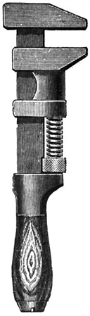

REPARATION
"Avec les maisons en préfabriqué, pendant le crédit tu répares ce qui s'écroule, et au bout de quinze ans les ruines sont à toi." Coluche
On reconstruit lorsque c'est détruit, rasé, disparu. On répare quand c'est fissuré, transpercé, cassé, déchiré, lésé, abîmé.
Le mécanisme de réparation commence à se mettre en œuvre quand le sujet "cassé" est en mesure de constituer l’autre, le casseur, comme un objet total et extérieur à son économie psychique. Ainsi les sentiments d’amour et d’hostilité mêlés vis-à-vis de l’autre générent une conflictualité psychique. Cette dernière suscite de la culpabilité, des vécus dépressifs, et la réparation apparaît comme un moyen spécifique de surmonter ces affects. L’acte affectif de réparation est l'issue privilégiée à la position anxio-dépressive et, bien qu’il puisse comporter des fantasmes maniaques et des pratiques obsessionnelles, il est radicalement différent de ceux-ci.
Le processus de réparation peut en effet connaître des échecs partiels et, en lieu et place d’une "vraie" réparation, peut advenir une réparation maniaque ou obsessionnelle. Ces échecs partiels du mécanisme de réparation peuvent se manifester, principalement dans les premiers temps de sa mise en œuvre, mais également à tous moments de la vie : ce sont alors des réparations compensatoires qui se déploient, mais vaines, elles amenent à une inertie cristallisante. Pour exemple une rupture sentimentale amène le délaissé à compenser frénétiquement des relations sans contenance. La répétition "maniaque" des rencontres sclérose le sujet dans l'absence de réparation vraie. Au contraire, il fige ainsi sa fêlure narcissique sans se donner le pouvoir d'avoir le recul et l'espace pour le réparage. Ce bricolage maniaque peut être considéré comme une défense psychique vis-à-vis de la perte de l’objet idéal et de la culpabilité éprouvée : c'est-à-dire que ce processus ne permet pas l’intégration du deuil ni de la culpabilité, il vise plutôt à les annuler, sans certitude et avec souffrance.
La réparation, quand elle parvient à sa réalisation complète, est un bénéfice pour soi et pour l’autre. Si elle nous permet de surmonter nos affects dépressifs, elle est dans le même temps le fruit d’une authentique préoccupation pour l’autre, autorisant un positionnement éthique, dans la relation, qui trouve son expression dans l’acte affectif de réparation. La réparation correcte se fonde sur la reconnaissance de la réalité psychique, sur le vécu de la souffrance causée par cette réalité et sur l’action adéquate entreprise pour la soulager en fantasme et dans la réalité. Elle prend l'aura de la résilience et de l'abréaction dans leur pleine complémentarité.
Succinctement, la résilience est un phénomène psychologique qui consiste, pour un individu affecté par un traumatisme, à prendre acte de l'événement traumatique pour ne plus, ou ne pas, avoir à vivre dans le malheur et se reconstruire d'une façon socialement acceptable. La résilience serait rendue possible grâce à la structuration précoce de la personnalité, par des expériences constructives de vie, par la réflexion et la parole. Quant à l'abréaction, c'est une décharge émotionnelle par laquelle un sujet se libère de l’affect attaché au souvenir d’un événement traumatique lui permettant ainsi de ne pas devenir ou rester pathogène.
La réparation considérée, l'amour reprend place. Alors l'interrogation se pose : est-ce l'amour qui permet la résilience ou la résilience qui permet l'amour ? Le pychiatre Boris Cyrulnik , explique que finalement les deux se renforcent mutuellement : "l'humain ne peut vivre et se développer que si un autre met son empreinte sur lui".
Quels sont les mécanismes de résilience ? Dans le fracas de l'existence (abandon, traumatisme), le sujet met en place des moyens de défense internes tels le clivage, quand le moi se divise en une partie socialement acceptée et une autre, plus secrète maintenant la scissure. On trouve également le déni qui permet de ne pas voir une réalité dangereuse ou de banaliser une blessure douloureuse. Les autres mécanismes de défense sont la rêverie, l'intellectualisation, l'abstraction ou encore l'humour.
Le mécanisme de réparation commence à se mettre en œuvre quand le sujet "cassé" est en mesure de constituer l’autre, le casseur, comme un objet total et extérieur à son économie psychique. Ainsi les sentiments d’amour et d’hostilité mêlés vis-à-vis de l’autre générent une conflictualité psychique. Cette dernière suscite de la culpabilité, des vécus dépressifs, et la réparation apparaît comme un moyen spécifique de surmonter ces affects. L’acte affectif de réparation est l'issue privilégiée à la position anxio-dépressive et, bien qu’il puisse comporter des fantasmes maniaques et des pratiques obsessionnelles, il est radicalement différent de ceux-ci.
Le processus de réparation peut en effet connaître des échecs partiels et, en lieu et place d’une "vraie" réparation, peut advenir une réparation maniaque ou obsessionnelle. Ces échecs partiels du mécanisme de réparation peuvent se manifester, principalement dans les premiers temps de sa mise en œuvre, mais également à tous moments de la vie : ce sont alors des réparations compensatoires qui se déploient, mais vaines, elles amenent à une inertie cristallisante. Pour exemple une rupture sentimentale amène le délaissé à compenser frénétiquement des relations sans contenance. La répétition "maniaque" des rencontres sclérose le sujet dans l'absence de réparation vraie. Au contraire, il fige ainsi sa fêlure narcissique sans se donner le pouvoir d'avoir le recul et l'espace pour le réparage. Ce bricolage maniaque peut être considéré comme une défense psychique vis-à-vis de la perte de l’objet idéal et de la culpabilité éprouvée : c'est-à-dire que ce processus ne permet pas l’intégration du deuil ni de la culpabilité, il vise plutôt à les annuler, sans certitude et avec souffrance.
La réparation, quand elle parvient à sa réalisation complète, est un bénéfice pour soi et pour l’autre. Si elle nous permet de surmonter nos affects dépressifs, elle est dans le même temps le fruit d’une authentique préoccupation pour l’autre, autorisant un positionnement éthique, dans la relation, qui trouve son expression dans l’acte affectif de réparation. La réparation correcte se fonde sur la reconnaissance de la réalité psychique, sur le vécu de la souffrance causée par cette réalité et sur l’action adéquate entreprise pour la soulager en fantasme et dans la réalité. Elle prend l'aura de la résilience et de l'abréaction dans leur pleine complémentarité.
Succinctement, la résilience est un phénomène psychologique qui consiste, pour un individu affecté par un traumatisme, à prendre acte de l'événement traumatique pour ne plus, ou ne pas, avoir à vivre dans le malheur et se reconstruire d'une façon socialement acceptable. La résilience serait rendue possible grâce à la structuration précoce de la personnalité, par des expériences constructives de vie, par la réflexion et la parole. Quant à l'abréaction, c'est une décharge émotionnelle par laquelle un sujet se libère de l’affect attaché au souvenir d’un événement traumatique lui permettant ainsi de ne pas devenir ou rester pathogène.
La réparation considérée, l'amour reprend place. Alors l'interrogation se pose : est-ce l'amour qui permet la résilience ou la résilience qui permet l'amour ? Le pychiatre Boris Cyrulnik , explique que finalement les deux se renforcent mutuellement : "l'humain ne peut vivre et se développer que si un autre met son empreinte sur lui".
Quels sont les mécanismes de résilience ? Dans le fracas de l'existence (abandon, traumatisme), le sujet met en place des moyens de défense internes tels le clivage, quand le moi se divise en une partie socialement acceptée et une autre, plus secrète maintenant la scissure. On trouve également le déni qui permet de ne pas voir une réalité dangereuse ou de banaliser une blessure douloureuse. Les autres mécanismes de défense sont la rêverie, l'intellectualisation, l'abstraction ou encore l'humour.

Voyez la réparation comme un acte privé, un pacte avec soi-même, un geste de clémence et d'apaisement On se répare soi-même comme nous pouvons cicatriser naturellement d'une plaie cutanée. Les autres ne nous réparent pas. Le pardon s'accorde sans confession, sans contrition, sans promesse. Sans juge et sans coupable, sans audience et sans tribunal, sans aveu et sans repentir. C'est un pardon qui s'énonce dans l'intimité, lorsqu'on est en lien avec soi-même et qui ne cherche ni témoin, ni justice.
Mais des entraves peuvent exister comme le secret de famille qui empêche toute réparation. Encore, la plupart des crimes d'effractions intimes qui ne passent pas par la voie judiciaire, ni sociale, ni même par le reproche clair. Dans les blessures psychiques qui jonchent l'ordinaire des histoires familiales ou d'infraction de l'intime, aucun tribunal n'est là pour recueillir les plaintes, pour vérifier les faits, pour instruire les charges et les décharges, pour prononcer des verdicts. Comment se règlent alors besoin de vengeance, désir de représailles, reconnaissance dans la position de victime, recherche de dédommagement et quête de vérité dans la dimension symbolique ?
Il ne faut pas mésestimer la force vindicative du désir de représailles de celui qui est blessé et qui n'a pas de scène, publique ou psychique, pour être entendu. Et dans l'impuissance d'une justice symbolique le symptôme fait office de réparation. Il devient une tentative de réparation vaine. Les fantasmes de réparation nous permettent d'agir sur le monde en le transformant. Réparer, c'est réinventer le monde pour ne pas sombrer avec lui, l'enchanter, lui donner du sens, lui donner de l'humanité. Réparer, c'est recréer de l'humanité. C'est concevoir et modeler un espace où l'on peut vivre avec soi-même et avec les autres. On voit combien ces projections habitent le pardon, C'est le chemin de résilience qui passe par les processus de deuil et les fantasmes de réparation et qui permet de desserrer le garrot du ressentiment, en donnant une alternative à la vengeance et ses curieux effets. Les pardonneurs ont bricolé leur paix intime, créant un pardon personnel qui les libère du lien étouffant de la haine.
Pour vivre avec son passé, dans son présent, pour son avenir, il faut créer un monde qui soit vivable. C'est ce que permet la réparation psychique. Il nous donne la capacité de survivre à l'effraction, à la brisure, au traumatisme, de tenir le coup malgré eux.
Mais des entraves peuvent exister comme le secret de famille qui empêche toute réparation. Encore, la plupart des crimes d'effractions intimes qui ne passent pas par la voie judiciaire, ni sociale, ni même par le reproche clair. Dans les blessures psychiques qui jonchent l'ordinaire des histoires familiales ou d'infraction de l'intime, aucun tribunal n'est là pour recueillir les plaintes, pour vérifier les faits, pour instruire les charges et les décharges, pour prononcer des verdicts. Comment se règlent alors besoin de vengeance, désir de représailles, reconnaissance dans la position de victime, recherche de dédommagement et quête de vérité dans la dimension symbolique ?
Il ne faut pas mésestimer la force vindicative du désir de représailles de celui qui est blessé et qui n'a pas de scène, publique ou psychique, pour être entendu. Et dans l'impuissance d'une justice symbolique le symptôme fait office de réparation. Il devient une tentative de réparation vaine. Les fantasmes de réparation nous permettent d'agir sur le monde en le transformant. Réparer, c'est réinventer le monde pour ne pas sombrer avec lui, l'enchanter, lui donner du sens, lui donner de l'humanité. Réparer, c'est recréer de l'humanité. C'est concevoir et modeler un espace où l'on peut vivre avec soi-même et avec les autres. On voit combien ces projections habitent le pardon, C'est le chemin de résilience qui passe par les processus de deuil et les fantasmes de réparation et qui permet de desserrer le garrot du ressentiment, en donnant une alternative à la vengeance et ses curieux effets. Les pardonneurs ont bricolé leur paix intime, créant un pardon personnel qui les libère du lien étouffant de la haine.
Pour vivre avec son passé, dans son présent, pour son avenir, il faut créer un monde qui soit vivable. C'est ce que permet la réparation psychique. Il nous donne la capacité de survivre à l'effraction, à la brisure, au traumatisme, de tenir le coup malgré eux.
EN RELATION
LACHER PRISE
TRAUMA
LEGITIMITE


SECRET
A-BANDON
TRAHISON